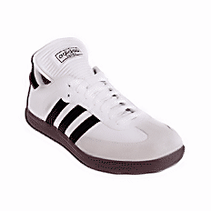
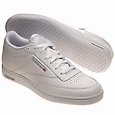

|
We strive to keep our training as realistic as possible, but the fact is we do train on inch-thick mats.
Doubtless, outdoor concrete or asphalt would be more realistic, especially when grappling, but in addition to
training realistically, we still need to train smart. Mats are especially helpful because Indonesian
fighting arts frequently take their opponents down (not by throwing them as a judo player might, but taking
them down by destroying their balance and their legs). The shoes we wear then, should protect our feet
and have a more realistic feel — not like wrestling or kung-fu shoes, but shoes that feel more like
those we wear daily. They must also cause less wear and tear on our mats (meaning flat and relatively
smooth soles).
Please, no shoes with this kind of sole. No one is required to buy new shoes in order to train with us. You can take existing shoes, scrub the soles with soap and water, put them in your bag, don't wear them outside the school again, and you're good to go. That said, should you need to purchase new training shoes, consider the following Adidas indoor soccer shoe or the Reebock sneaker. (Any brand like either of these with relatively flat soles and realistic street weight should work well in our training.) Although I personally prefer white because it makes it easier to see your foot position when legwork is involved, you may choose either black or white (no other colors are acceptable here). Regardless of the brand, shoes like these meet all our training requirements. |
|
|

Samba Soccer Shoes |

Reebok Men's Club Sneakers |
|
Note: For offsite training sessions with active duty military personnel, we recommend training in combat boots. |
|
|
©Copyright Bob Orlando, 2004-2016 All rights reserved. |
http://www.OrlandoKuntao.com
E-mail: Ron@OrlandoKuntao.com |
Last update:
Aug. 6, 2016 by Bob Orlando |